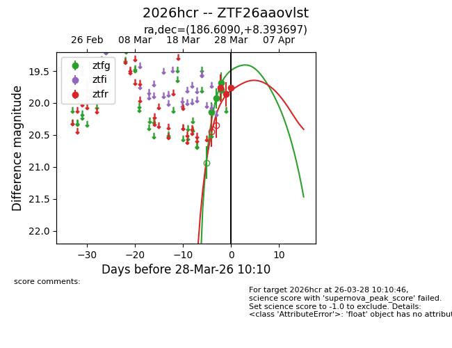
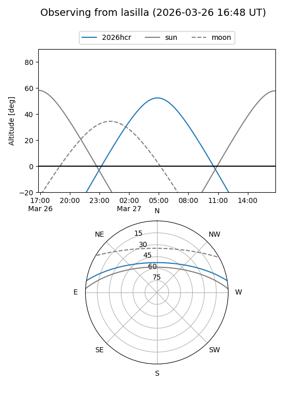
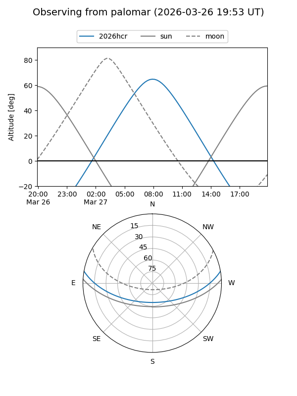
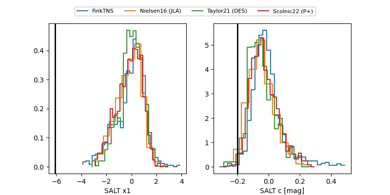

2026hcr
Target 2026hcr at 2026-03-28 10:13
Aliases and brokers:
FINK: link
Lasair: link
ALeRCE: link
TNS: link
YSE: link
alt names
ZTF26aaovlst (ztf,fink_ztf)
2026hcr (tns,yse)
Coordinates:
equatorial (ra, dec) = 186.6090,+8.39370
equatorial (HMS+DMS) = 12:26:26.16,+08:23:37.31
galactic (l, b) = (284.2478,+70.35314)
Flags:
Photometry:
last ztfg=19.68, ztfr=19.76
4 ztfg, 3 ztfr detections
Lightcurve

Visibility


Additional plots
